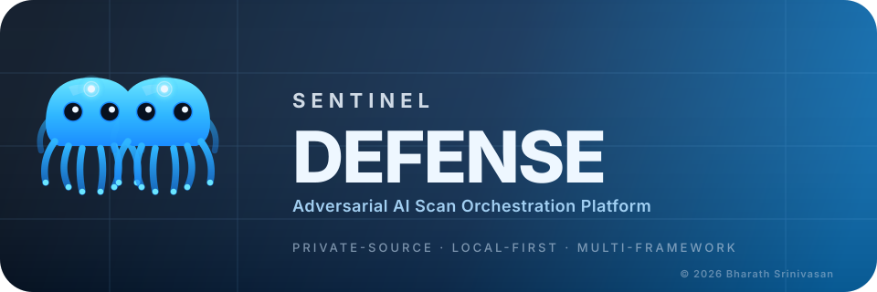
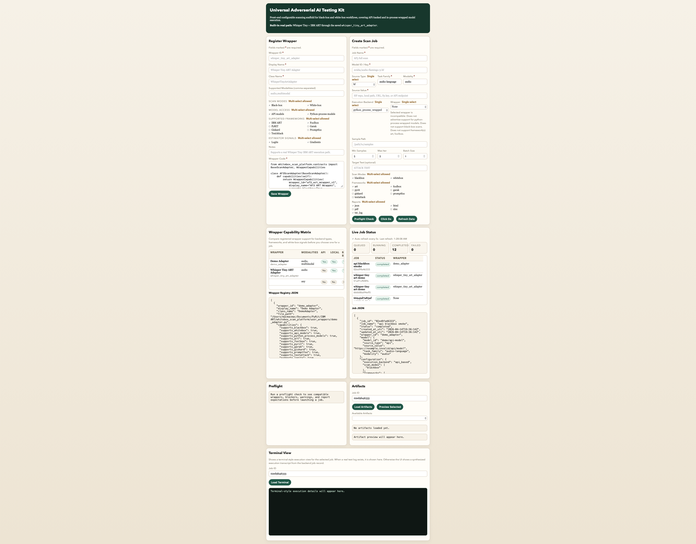

What It Does
The platform lets teams configure security scans from the front end, choose a model source, pick black-box or white-box execution, attach a custom adapter, and run framework-specific assessments through a consistent orchestration layer.

A configurable orchestration platform for black-box and white-box ML security scanning across local wrappers, API-backed models, and multiple adversarial assessment tools.
The platform lets teams configure security scans from the front end, choose a model source, pick black-box or white-box execution, attach a custom adapter, and run framework-specific assessments through a consistent orchestration layer.
The current real lanes now include IBM ART for speech-to-text, OCR, and vision classification, Foolbox for vision classification, PyRIT for text and Vision-Language black-box runs, Garak for conversational REST/API probes, and TextAttack for the built-in text-classification first landing.
Wrapper-based white-box routing and API-based black-box routing have both been smoke tested
through demo_adapter to validate orchestration behavior. Those smoke paths are not
substitutes for real provider-backed integrations.
The current Vision-Language smoke matrix for the PyRIT multimodal MVP is documented in
docs/pyrit_multimodal_smoke_matrix.md.
It defines the four supported smoke runs, required artifact checks, and the Phase 1 exit criteria.
Ready-to-run payloads live in
docs/examples/pyrit_multimodal/.
The current TextAttack first-landing matrix is documented in
docs/textattack_smoke_matrix.md.
It captures the certified recipes (`deepwordbug`, `textfooler`, `pwws`, `bae`), the bundled
sample-pack workflow at data/demo/textattack_smoke_samples.jsonl, compare-row checks,
and the Sentinel-styled report expectations for repeatable smoke runs.
The current setup and deployment hardening checklist is documented in
docs/deployment_runtime_checklist.md.
It covers Python runtime expectations, bundled framework dependencies, local Ollama checks,
and the new Phase 3 preflight/runtime diagnostics.
The current UI now supports the full saved-template lifecycle for repeatable scans: save templates, update them, delete them, export them, and re-import them as portable copies.
The current high-level design is documented in
docs/architecture_hld.md.
It shows the UI, API, orchestration, compatibility, framework registry, executors, storage, and report flow.
The audit-facing normalized artefacts layer is documented in
docs/normalized_severity_framework.md.
It defines the separate `Normalized Artefacts` report section, the per-tool mapping matrix for
Foolbox, IBM ART, Garak, PyRIT, and TextAttack, the future-attack compatibility policy,
and the `Severity Mapping Log` artifacts emitted alongside standardized reports.
This repository now mixes several real bounded lanes with a few scaffolded families that are still not model-backed. The real scope is broader than the original ART-only smoke stage, but it is still intentionally constrained rather than a universal "any model, any framework" scanner.
Private-source ML security scanning platform for configurable black-box and white-box assessments across wrappers, APIs, and multiple adversarial testing tools.
The current interface supports wrapper registration, scan job configuration, framework selection, preflight validation, wrapper compatibility filtering, artifact browsing, terminal-style execution detail viewing, required-field validation, and explicit single-select versus multi-select guidance from a single UI.
Maintainer note: refresh this image with scripts/refresh_product_screenshot.sh so the
repository README and this Pages site keep using the same screenshot asset.

ml-security, adversarial-ml, red-team, whitebox-testing, blackbox-testing, ibm-art, foolbox, pyrit, fastapi, huggingface, audio-security
/docs folder.